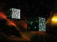
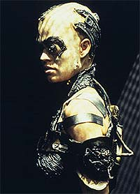

|
Janeway
vs. Primeira Diretriz, Parte III
 Caminhamos
um pouco mais, para o quarto ano de Voyager, e grandes
mudanças ocorrem no dia-a-dia da intrépida tripulação, com a
primeira aparição significativa dos Borgs, a conseqüente
introdução de Seven of Nine e a ameaça Hirogen. Obter
suprimentos e novas tecnologias, assim como defender-se de
espécies hostis, torna-se muito mais difícil, algo além da
famosa diplomacia dos oficiais da Federação. Caminhamos
um pouco mais, para o quarto ano de Voyager, e grandes
mudanças ocorrem no dia-a-dia da intrépida tripulação, com a
primeira aparição significativa dos Borgs, a conseqüente
introdução de Seven of Nine e a ameaça Hirogen. Obter
suprimentos e novas tecnologias, assim como defender-se de
espécies hostis, torna-se muito mais difícil, algo além da
famosa diplomacia dos oficiais da Federação.
Começamos com "Scorpion", o episódio duplo que
abre a temporada. A Capitã Janeway enfrenta a situação
provavelmente mais aterrorizante de todos os capitães: depara com
a Coletividade Borg. A diferença é que, neste caso, ela não tem
o apoio da Frota Estelar ou da Federação.
Embora possua um fantástico arsenal, a USS Voyager é uma nave
pequena, projetada para missões de curta duração. A idéia de
atravessar território Borg significa morte certa e, após quase
três anos de viagem pelo Quadrante Delta, os tripulantes
encontram seu maior desafio.

Depois de um rápido confronto com quinze cubos, a nave descobre
uma nova ameaça: na 'linguagem colorida' dos Borgs, a Espécie
8472. Trata-se de seres não-humanóides, vindos de um domínio
onde vivem sós, um tipo de universo paralelo. A Coletividade
tentou assimilá-los, mas não teve sucesso, pois seu sistema
imunológico é completamente resistente a agentes biológicos,
químicos ou tecnológicos.
Além de provocá-los, os Borgs abriram um portal para a nossa
galáxia e iniciaram um conflito que agora estavam perdendo. Nesse
meio tempo, o Doutor desenvolve um modo de infectar os 8472 e suas
bionaves, usando nanossondas Borgs modificadas.
A capitã então toma uma decisão sem precedentes: faz uma
aliança temporária com a Coletividade. A Voyager forneceria um
meio de derrotar a Espécie 8472 em troca de passagem livre e
segura pelo espaço Borg. Essa foi, possivelmente, a maior
violação da Primeira Diretriz na história do seriado --o
envolvimento em uma guerra alheia, sobretudo ao lado dos Borgs,
sendo que estes iniciaram o conflito. Além disso, a presença dos
8472 trazia motivação e esperança às centenas de espécies sob
risco de assimilação pelos Borgs. Janeway, na luta para
justificar seu plano de trazer a Voyager para casa, estava
disposta a fechar essa janela.

A presença de Seven of Nine a bordo também abre espaço para
outras observações. Como Borg, ela nunca se submeteu a uma
sociedade dividida em hierarquias, regras e leis de conduta. A
vida em uma nave estelar com 150 humanos certamente ofereceu
grande dificuldade de adaptação. Em muitas ocasiões ela decidiu
agir por conta própria, comprometendo a Primeira Diretriz. Isto
será analisado mais detalhadamente quando abordarmos o sexto ano
do seriado.
Mas o evento que repercutiu mais claramente foi mesmo o acordo com
os Hirogen, no episódio "The Killing Game", em
que a nave foi tomada por essa raça de caçadores, e Janeway e
sua tripulação submetidos a manipulação mental e expostos a
simulações de holodeck extremamente violentas, sem a proteção
dos protocolos de segurança que asseguram a integridade física
do indivíduo nos cenários. Quando a situação sai do controle
para ambos os lados, a capitã, já com sua personalidade
recuperada, declara o cessar-fogo com os Hirogen e, em troca de
sua nave e segurança dos tripulantes, entrega ao inimigo a
tecnologia que permite a criação de holodecks.
O fato de simplesmente entregar tecnologia da Federação a uma
espécie que não possui tal conhecimento fere gravemente a
diretriz que rege todas as naves da Frota. Esse ato seria
inconcebível na cabeça da Kathryn Janeway da primeira temporada
da série. Mas, como já foi dito, "os fins justificam os
meios". Esse fato isolado vai repercutir no sétimo ano da
série, em "Flesh and Blood", em que tanto os
Hirogen como a Voyager têm de enfrentar as conseqüências dessa
troca de tecnologia.
Daniel
Sasaki é co-editor do Trek
Brasilis
|